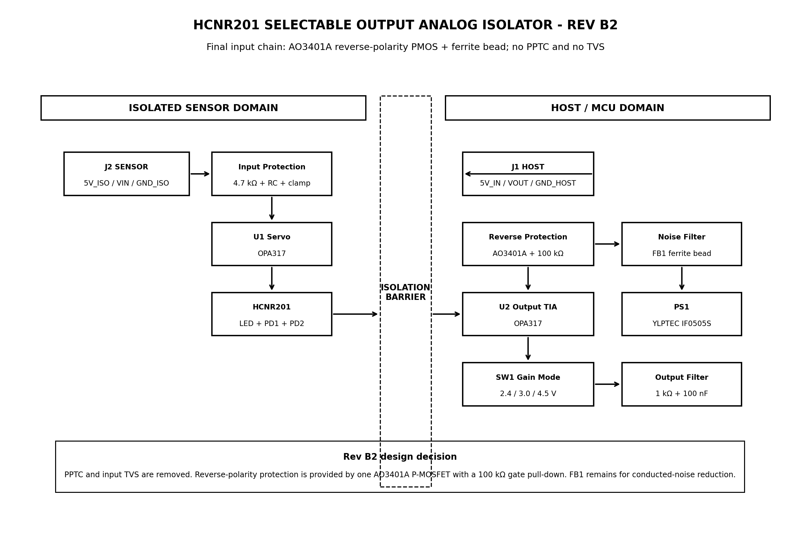
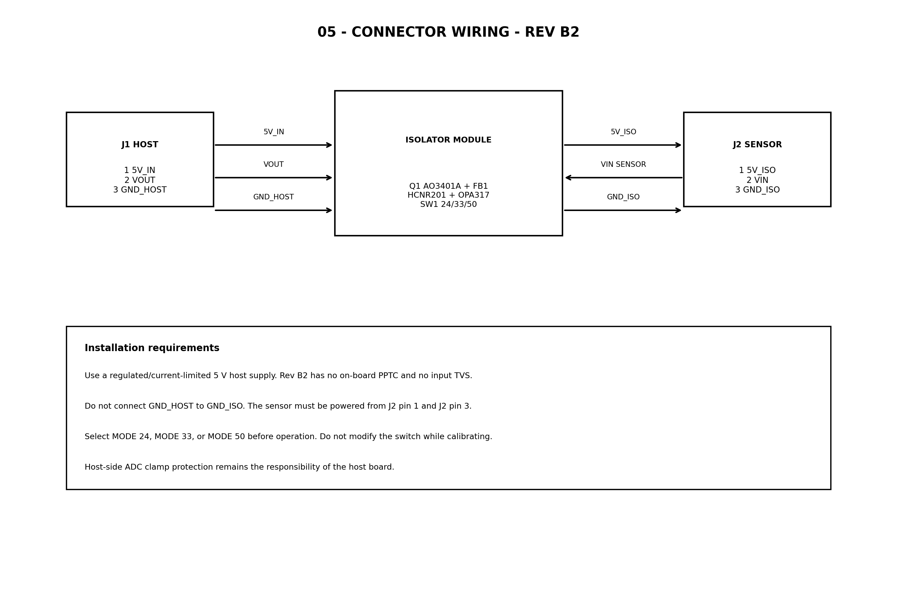
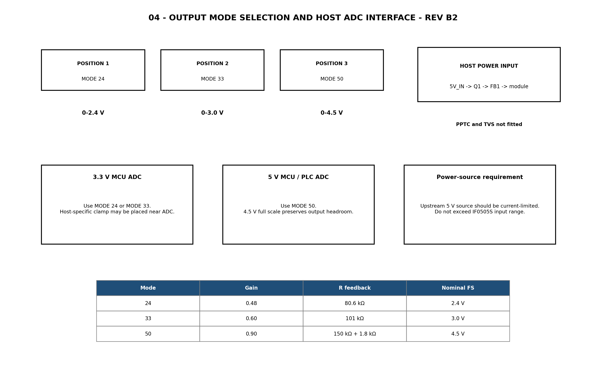
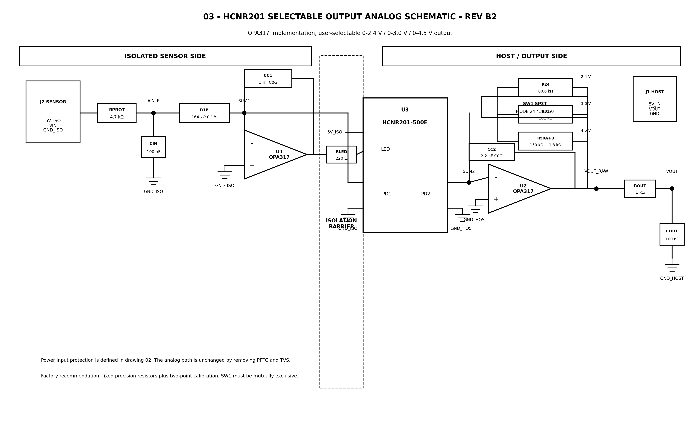

Apa fungsi modul ini?
Modul memisahkan sisi sensor dari sisi mikrokontroler/PLC secara galvanik. Sensor mengirim sinyal DC 0–5 V melalui VIN; host menerima versi terisolasi di VOUT. Ground sensor dan ground host tidak boleh disatukan.

Spesifikasi utama
Modul bukan input 4–20 mA, bukan input AC, dan tidak boleh diberi sinyal negatif atau lebih dari 5 V tanpa rangkaian pengondisi tambahan.
Wiring

| Konektor | Pin | Fungsi |
|---|---|---|
| J1 — HOST | 1: 5V_IN | Catu host +5 V |
| J1 — HOST | 2: VOUT | Ke ADC/input analog host |
| J1 — HOST | 3: GND_HOST | Ground host/MCU/PLC |
| J2 — SENSOR | 1: 5V_ISO | +5 V terisolasi untuk sensor |
| J2 — SENSOR | 2: VIN | Sinyal sensor 0–5 V |
| J2 — SENSOR | 3: GND_ISO | Ground sensor |
Pilih mode sebelum menyalakan daya

| Mode | Keluaran skala penuh nominal | Penggunaan yang dianjurkan |
|---|---|---|
| MODE 24 | 2,4 V | ESP32 atau ADC 3,3 V yang memerlukan margin aman |
| MODE 33 | 3,0 V | ADC MCU 3,3 V umum |
| MODE 50 | 4,5 V | ADC 5 V, Arduino 5 V, atau PLC |
Pasang dalam 8 langkah
- Matikan seluruh catu daya dan pilih mode SW1.
- Pastikan keluaran sensor adalah 0–5 V DC.
- Hubungkan
5V_IN,VOUT, danGND_HOSTpada J1. - Hubungkan sensor ke
5V_ISO,VIN, danGND_ISOpada J2. - Pastikan tidak ada hubungan antara
GND_HOSTdanGND_ISO. - Nyalakan catu host +5 V yang memiliki pembatas arus.
- Uji input 0 V dan 5 V; periksa apakah VOUT mendekati skala penuh mode.
- Lakukan kalibrasi dua titik sebelum penggunaan presisi.
Pinout berdasarkan PCB fisik

PCB pada foto memakai jumper solder M2.4V1, M3.3V1, dan M5V1. Pasang satu saja (FIT ONE ONLY). Detail pemasangan tersedia dalam dokumen pinout PCB.

Kalibrasi dua titik
Catat VZERO pada VIN = 0 V dan VFULL pada VIN = 5 V. Untuk setiap pembacaan ADC, gunakan:
Simpan nilai kalibrasi untuk tiap unit dan tiap mode. Kalibrasi ini hanya untuk jalur isolator; kalibrasi fisik sensor dilakukan terpisah.
Catatan keandalan dan troubleshooting
- Rev B2 tidak memiliki TVS atau sekering resettable pada papan; proteksi surge dan pembatas arus harus disediakan oleh sistem.
- Jika output 0 V, periksa catu J1, catu sensor J2, lalu tegangan VIN terhadap GND_ISO.
- Jika pembacaan bising, cari sambungan ground tak sengaja melalui USB, osiloskop, atau kabel sensor.
- Jika skala penuh meleset, jangan mengubah switch; lakukan kalibrasi dua titik dengan sumber uji yang akurat.
